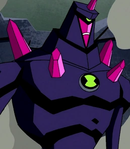

Ben 10 - Alien Force
Fogo Fátuo:
O primeiro Alien que o Ben se transformou em Alien Force, e um dos mais utilizados e fortes da obra.
Cromatico:
Cromatico mesmo sendo um dos Aliens menos utilizados do Ben10, ainda é um dos mais úteis e fortes. Podendo devolver qualquer meio de energia que o atingiu de volta ao agressor.
Friagem:

Friagem é o alien mais versátil do Ben10, tendo habilidades de vôo, translucidade, congelamento e camuflagem.
Rath:

Rath é um alien extremamente temperamental, se estressando facilmente, e querendo resolver tudo da forma mais bruta possivel. Mesmo não sendo o mais forte, ainda é MUITO engraçado.
Alien X:
AlienX é uma entidade composta por 3 consciências, e as tais em meio a um debate podem decidir o'que podem ou não alterar no universo. É considerado o Alien mais forte de Ben10.
Ben10 = Protagonista
Gwen = Subprotagonista
Kevin = Ant-Heroi